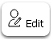
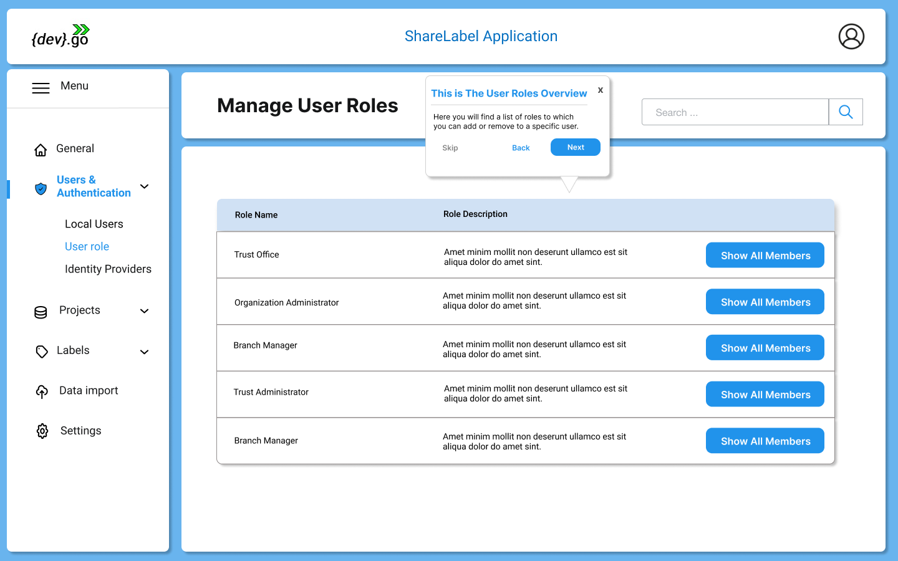

Users
User managment it is one of the mandatory configuration that is required as one of the primary task to be completed. Users account and their information will have a double perspective in Ez2Cloud. Indeed, user account are used in the authentication process and also to implement the Ownership Label concept.
All the functionalities needed to manage user will be available under the User Managment Menu View. After click in this option  from the Main window side menu, the User Management View will be shown as the following image:
from the Main window side menu, the User Management View will be shown as the following image:

At the top of the User Management View there are multiple button that allows manage users: add, edit, disable, search users. Next you'll find more details on each of the available action. Note that these users are the ones managed by Ez2Cloud. In later version you can use users managed by Third part servies such On-premise AD ou Azure AD.

Local User Managment
The following section describe action to be performed on a single on a limited group of users. It is best suited to small group of users.
All the local users accounts information are presented in a table as shown in the follwing image: 
The user account information that is presented can be ordered by the fields: First Name, Last Name, Email. To do that, just pass the mouse over the title corresponding to the field you want to sort and click on the button 
Also the information can be filtered by Departament, Role and Stauts. Do so by pass mouse over the title corresponding to the field you want to filter and click on the button  Also you can navigate to different pages by click in one this arrows
Also you can navigate to different pages by click in one this arrows 
User Status
The local users have a status that refers to the current state of the user regarding Ez2Cloud Plataform. The different status are:
 - A user is created email Invitation Sent.
- A user is created email Invitation Sent.  - Account has been created and it is currently used. After the user accepts the invitation and actually set up the account.
- Account has been created and it is currently used. After the user accepts the invitation and actually set up the account. - A user was disabled
- A user was disabled
Action on users
The actions to be performed on the information user account will always started by selecting one or multiple users from the table. Selecting a user by just click the check-box at the row of the corresponding user or just click on multiple check-box or select all the users by click the check-box on the table header.
The buttons will be disabled until one or more users is selected. Also the Add User button can be disable due to the fact that the Tenant has reach the maximum number of users the current subscripiton allows. In this case upon the Add icon you will see the  icon
icon
- To Add User

Local users can be added one at a time by fill the fields showed in the following image.

An invititation will be sent to the provided email address. In order to login the user must proceed to Ez2Cloud follow the invitation link embeded in the message and set his password and other provied other information that will be requested.
- To Edit User 
Local users can be Edit to change a User account. A user with the Role Administrator can change the values of the Users account, filling values in the fields as show in the form on the image
 . It is not possible to change email address.
. It is not possible to change email address. -
To Disable User

From the user table select rows that represents the ones you wnat to disable and then click button
 . You will see the following dialog
. You will see the following dialog
 where you must confirm to disable user. If you select multiple users the confirmation dialog will be show all the users selected
where you must confirm to disable user. If you select multiple users the confirmation dialog will be show all the users selected 
-
To Reset Password

From the user table select rows that represents the ones you wnat to reset password and then click button
 . You will see the following dialog
. You will see the following dialog
 where you must confirm the reset user operation. If you select multiple users the confirmation dialog will be show all the users selected
where you must confirm the reset user operation. If you select multiple users the confirmation dialog will be show all the users selected

Import Users
Users Roles
